용접기사 (2019-03-03 기출문제)
1과목: 기계제작법
1. 가스 용접 중 역화(back fire)발생의 원인으로 옳은 것은?
- 산화 불꽃이 심할 때
- 환원 불꽃이 심할 때
- 중성불꽃으로 용접할 때
- 토치 팁 끝의 과열이나 가스 압력이 부적당할 때
(정답률: 77%)

2. 지름에 비해 길이가 긴 공작물을 (보톨 지름의 20배 이상)가공할 때 자중이나 절삭력에 의해 굽힘이 생겨 절삭이 좋지 않으므로 이를 방지하기 위해 사용하는 선반용 부속품은?
- 센터(center)
- 척(chuck)
- 돌리개(lathe dog)
- 방진구(work test)
(정답률: 40%)
3. 강의 열처리 중 다`듬질 후 인성으로 부여하기 위해 A1 변태점 이하의 온도에서 하는 열처리는?
- 재담금질(requenching)
- 템퍼링(tempering)
- 어닐라(annealing)
- 노멀라이징(normalizing)
(정답률: 57%)
4. 다음 중 공구수명의 판정기준으로 옳지 않은 것은?
- 절삭저항의 변화
- 절삭속도와 이송속도
- 강공면에 나타나는 광택 및 반점
- 크레이터(crater) 마모 또는 플랭크(flank)마모의 크기
(정답률: 42%)
5. 세이퍼 램(ram)의 왕복운동 방식이 아닌 것은?
- 스크류와 너트에 의한 방식
- 래크와 피니언에 의한 방식
- 유압에 의한 방식
- 코터에 의한 방식
(정답률: 50%)
6. 형상에 따른 게이지 블록의 종류가 아닌 것은?
- 호크형
- 캐리형
- 플러그형
- 요한슨형
(정답률: 45%)
7. 소성가공에 포함되지 않는 가공법은?
- 단조
- 보링
- 압출
- 전조
(정답률: 64%)
8. 공구의 재료적 결함이나 미세한 균열이 잠재적 원인이 되기도 하며 충격에 의해 공구인선의 일부가 미세하게 파괴되어 탈락하는 현상은?
- 치핑
- 온도파손
- 플랭크 마모
- 크레이터 마모
(정답률: 48%)
9. 다음 주어진 게이지에서 피측정물의 경사면과 사인바의 측정면이 평행인 상태로서 롤러중심간의 거리가 100mm인 사인바의 이루는 각이 30°일 때 필요하지 않은 게이지 블록은?
- 4.5mm
- 5.5mm
- 25mm
- 40mm
(정답률: 27%)
10. 구성인선(built-up edge)의 방지 대책으로 옳은 것은?
- 절삭 속도를 느리게 한다.
- 절삭유를 사용하지 않는다.
- 절삭공구 경사각을 작게 한다.
- 적살공구의 인선을 예리하게 한다.
(정답률: 58%)
11. 다음 중 전기저항에 의한 용접의 분류방법에 해당하지 않는 것은?
- 심 용접
- 스폿 용접
- 테르밋 용접
- 프로젝션 용접
(정답률: 70%)
12. 절삭가공 중 발생하는 가공 변질층의 영향으로 옳지 않은 것은?
- 절삭저항은 가공 변질층의 깊이는 영향을 미치지 못한다.
- 다듬질면의 내마모성과 내부식성을 현저하게 저하시킨다.
- 국부적인 파손이 발생하기 쉽다.
- 피로강도와 내충격성을 현저히 감소시킨다.
(정답률: 60%)
13. 측면과 정면에 낳이 있는 밀링커터로 축에 수직인 넓은 평면을 가공할 때 사용하는 것은?
- 메탈 소
- 볼 엔드밀
- 정면 밀링 커터
- 총형 밀링 커터
(정답률: 57%)
14. 인벌류트 치형을 정확히 가공할 수 있는 방법으로 기어가 회전운동을 할 때 절삭공구와 공작물ㄷ이 서로 접촉하는 것과 같은 상대운동으로 절삭하는 것은?
- 형판에 의한 방법
- 창성에 의한 방법
- 총형 커터에 의한 방법
- 오돈토 그래프에 의한 방법
(정답률: 37%)
15. 강(stiil)에 비하여 인장강도가 작고 취성이 크며 고온에서 소성변형이 되지 않는 단점이 있는 조조용 재료는?
- 주철
- 동합금
- 마그네슘 합금
- 알루미늄 합금
(정답률: 59%)
16. 공작물을 신속히 교환할 수 있도록 되어 있으며, 고정력이 작용력에 비해 매우 큰 클램프는?
- 쐐기형 클램프
- 캠 클램프
- 토글 클램프
- 나사 클램프
(정답률: 48%)
17. 지름 350mm 롤러로 폭 300mm, 두께 30mm의 연강판을 1회 열간 압연하여 두께 24mm가 될 때, 압하율은 몇 %인가?
- 10
- 15
- 20
- 25
(정답률: 53%)
18. 주조에서 사용하는 목형의 종류 중 현형에 해당하는 것은?
- 회전목형(sweeping pattern)
- 분할목형(split pattern)
- 긁기목형(strickle pattern)
- 부분목형(section pattern)
(정답률: 42%)
19. 초음파 가공에 대한 설명으로 틀린 것은?
- 가공물 표면에서의 증발 현상을 이용한다.
- 전기 에너지를 기계적 진동 에너지로 변하시켜 가공한다.
- 혼의 재료는 항동, 연상 들을 사용한다.
- 입자는 가공물에 연속적인 해머 작용으로 가공한다.
(정답률: 49%)
20. 선반 작업 시 절삭속도가 60m/min 이고, 주분력이 2500N일 때 절삭 동력은 약 몇 kW인가?
- 2.5
- 3.4
- 4.4
- 5.4
(정답률: 38%)
2과목: 재료역학
21. 그림과 같은 단순지지보에서 2kN/m의 분포하중이 작용할 경우 중앙의 처짐이 0이 되도록 하기 위한 힘 P의 크기는 몇 kN인가?
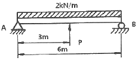
- 6.0
- 6.5
- 7.0
- 7.5
(정답률: 26%)
22. 탄성 계수(영계수)E, 전단 탄성 계수 G, 체적 탄성 계수 K 사이에 성립되는 관계식은?
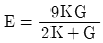
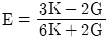
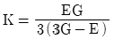
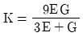
(정답률: 52%)
23. 폭 b=60mm, 길이 L=340mm의 균일강도 외팔보의 자유단에 집중하중 P=3kN이 작용한다. 허용 굽힘응력을 65MPa이라 하면 자유단에서 250mm되는 지점의 두께 h는 약 몇 mm인가? (단, 보의 단면은 두께는 변하지만 일정한 폭 b를 갖는 직사각형이다.)
- 24
- 34
- 44
- 54
(정답률: 37%)
24. 바깥지름 50cm, 안지름 30cm의 속이 빈 축은 동일한 단면적을 가지며 같은 재질의 원형축에 비하여 약 몇 배의 비틀림 모멘트에 견딜 수 있는가? (단, 중공축과 중실축의 전단응력은 같다.)
- 1.1배
- 1.2배
- 1.4배
- 1.7배
(정답률: 34%)
25. 두께 8mm의 강판으로 만든 안지름 40cm의 얇은 원통에 1MPa의 내압이 작용할 때 강판에 발생하는 후프 응력(원주 응력)은 몇 MPa인가?
- 25
- 37.5
- 12.5
- 50
(정답률: 30%)
26. 그림과 같이 길이 ℓ=4m의 단순보에 균일 분포하중 ω가 작용하고 있으며 보의 최대 굽힘응력 σmax=85N/cm2일 때 최대 전단응력은 약 몇 kPa인가? (단, 보의 단면적은 지름이 11cm인 원형단면이다.)
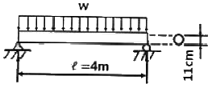
- 1.7
- 15.6
- 22.9
- 25.5
(정답률: 29%)
27. 길이 1m인 외팔보가 아래 그림처럼 q=5kN/m의 균일 분포하중과 P=1kN의 집중하중을 받고 있을 때 B점에서의 회전각은 얼마인가? (단 보의 굽힘강성은 EI이다.)
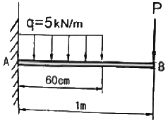
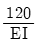
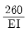
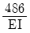
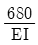
(정답률: 23%)
28. 그림과 같은 막대가 있다. 길이는 4m이고 힘은 지면에 평행하게 200N만큼 주었을 때 O점에 작용하는 힘과 모멘트는?
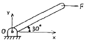
- Fσx=0, Fσy=200N, Mz=200Nㆍm
- Fσx=200, Fσy=0N, Mz=400Nㆍm
- Fσx=200, Fσy=200N, Mz=200Nㆍm
- Fσx=0, Fσy=0N, Mz=400Nㆍm
(정답률: 40%)
29. 진변형률(ϵT)과 진응력(σT)을 공칭 응력(σn)과 공칭 변형률(ϵn)로 나타낼 때 옳은 것은?
- σT=ln(1+σn), ϵT=ln(1+ϵn)
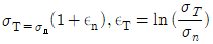
- σT=σn(1+ϵn), ϵT=ln(1+ϵn)
- σT=ln(1+ϵn), ϵT=ϵn(1+σn)
(정답률: 32%)
30. 양단이 고정된 직경 30mm, 길이가 10m인 중심축에서 그림과 같이 비틀림 모멘트 1.5kNㆍm가 작용할 때 모멘트 작용점에서의 빈틀림 각은 약 몇 rad인가? (단, 봉재의 전단탄성계수 G=100GPa이다.)
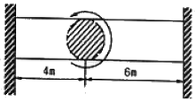
- 0.45
- 0.56
- 0.63
- 0.77
(정답률: 21%)
31. 단면적이 2cm2이고 길이가 4m인 환본에 10kN의 축 방향 하중을 가하였다. 이 때 환봉에 발생한 응력은 몇 N/m2인가?
- 5000
- 2500
- 5×105
- 5×107
(정답률: 32%)
32. 평면 응력상태의 한 요소에 σx=100MPa, σy=-50MPa, τxy=0을 받는 평판에서 평면내에서 발생하는 최대 전단응력은 몇 MPa인가?
- 75
- 50
- 25
- 0
(정답률: 33%)
33. 그림과 같은 트러스가 점 B에서 그림과 같은 방향으로 5kN의 힘을 받을 때 트러스에 저장되는 탄성에너지는 약 몇 kJ인가? (단, 트러스의 단면적은 1.2cm2, 탄성계수는 106Pa이다.)
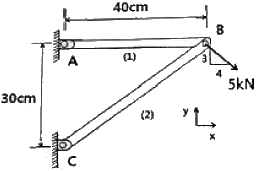
- 52.1
- 106.7
- 159.0
- 267.7
(정답률: 24%)
34. 그림과 같은 치차 전동 장치에서 A치차로부터 D 치차로 동력을 전달한다. B와 C 치차의 피치원의 직경의 비가
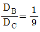
일 때, 두 축의 최대 전단응력들이 같아지게 되는 직경의 비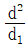
은 얼마인가?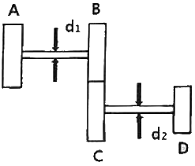
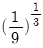
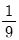
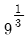
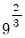
(정답률: 35%)
35. 부재의 양단이 자유롭게 회전할 수 있도록 되어있고, 길이가 4m인 압축 부재의 좌굴하중을 오일러 공식으로 구하면 약 몇 kN인가? (단, 세로찬성계수는 100GPa이고, 단면 b×h=100mm×50mm이다.)
- 52.4
- 64.4
- 72.4
- 84.4
(정답률: 35%)
36. 그림과 같이 길이 ℓ인 단순 지지된 보 위를 하중 W가 이동하고 있다. 최대 굽힘 응력은?
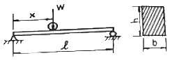
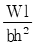
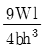
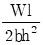
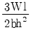
(정답률: 42%)
37. 그림과 같은 외팔보에 균일분포하중 ω가 전 길이에 걸쳐 작용할 때 자유단의 처짐 δ는 얼마인가? (단, E:탄성계수, I:단면 2차 모멘트이다.)
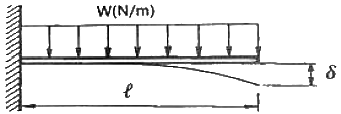
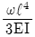
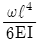
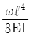
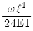
(정답률: 35%)
38. 그림과 같은 균일단면을 갖는 부정정보가 단순 지지단에서 모멘트 M0를 받는다. 단순 지지단에서의 반력 Ra는? (단, 굽힘강성은 EI는 일정하고, 자중은 무시한다.)
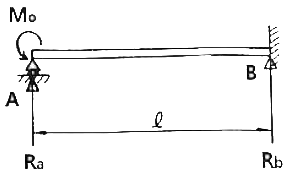
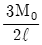
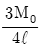
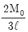
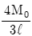
(정답률: 24%)
39. 그림과 같이 단면적이 2cm2인 AB 및 CD 막대의 B점과 C점이 1cm 만큼 떨어져 있다. 두 막대에 인장력을 가하여 늘인 후 B점과 C점에 핀을 끼워 두 막대를 연결하려고 한다. 연결 후 두 막대에 작용하는 인장력은 약 몇 kN인가? (단, 재료의 세로탄성계수는 200GPa이다.)
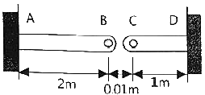
- 33.3
- 66.6
- 99.9
- 133.3
(정답률: 23%)
40. 그림과 같은 단면에서 대칭축 n-n에 대한 단면 2차 모멘트는 약 몇 cm4인가?
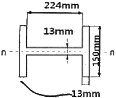
- 535
- 635
- 735
- 835
(정답률: 31%)
3과목: 용접야금
41. 마텐자이트계 스테인리스강의 용접에서 예열은 몇 ℃ 정도가 가장 적합한가?
- 50~100℃
- 200~400℃
- 800~850℃
- 900~950℃
(정답률: 54%)
42. 스테인리스강의 종류에서 내식성, 가공성 및 용접성이 가장 우수한 것은?
- 페라이트계 스테인리스강
- 펄라이트계 스테인리스강
- 마텐자이트계 스테인리스강
- 오스테나이트계 스테인리스강
(정답률: 77%)
43. 구리 및 구리 합금의 현미경 조직 시험에서 부식제로 적당한 것은?
- 질산 알코올
- 피크린산 알코올
- 염화 제2철 용액
- 수산화나트륨 용액
(정답률: 49%)
44. 일반적인 고온 균열의 특징으로 틀린 것은?
- 비교적 대입열량의 용접에서 발생하기 쉽다.
- 용접 후 용접부의 온도가 200℃ 이하의 온도에서 발생한다.
- 발생 시기는 대부분 응고 과정에서 일어나며, 응고 후에도 진전된다.
- 균열이 용접부 표면까지 진전되면 공기와 산화 작용으로 구별이 어렵다.
(정답률: 73%)
45. 압력 배관용 탄소 강관 재료를 나타내는 기호는?
- SPPS 250
- SGT 275
- SPLT 390
- STKM 14C
(정답률: 63%)
46. 용접품 후열처리의 주된 목적이 아닌 것은?
- 열영향 경화부의 연화
- 용접부의 부식성 향상
- 용접부의 수소 방출 효과
- 용접부의 고온 성능의 향상
(정답률: 67%)
47. 다음 균열 중 저온균열에 해당하지 않는 것은?
- 힐 균열(heel crack)
- 토 균열(toe crack)
- 루트 균열(root crack)
- 크레이터 균열(crater crack)
(정답률: 75%)
48. 용접 금속에서 은점, 미세 균열, 선상 조직은 다음 중 어느 원소의 영향으로 생기는가?
- 산소
- 질소
- 수소
- 규소
(정답률: 63%)
49. 큰 강재를 열처리할 때 표면에서 내부 중심부까지의 열처리효과의 차이가 생기는 것은?
- 시효효과
- 취성효과
- 질량효과
- 코트렐효과
(정답률: 52%)
50. 다음 중 면심입방격자로만 조합된 것은?
- Al, Ni, Cu
- Pt, Pb, V
- Ag, Au, W
- Mg, Zn, Cd
(정답률: 58%)
51. 금속의 조직에서 페라이트의 설명으로 옳은 것은?
- γ+Fe3C 합금이다.
- 6.67% C를 함유한 탄화철이다.
- 체심입방격자의 α철이며, C를 약 0.025%까지 고용한다.
- 면심입방격자에 탄소를 고용한 상으로 정사방정이다.
(정답률: 63%)
52. 강을 담금질할 때 잔류 오스테나이트를 마텐자이트화하기 위하여 0℃이하로 냉각 처리하는 것은?
- 표준화처리
- 고용화처리
- 구상화처리
- 서브제로처리
(정답률: 76%)
53. 표면 냉간가공의 일종으로, 금속 재료의 표면에 강이나 주철의 작은 입자들을 고속으로 분사시켜, 가공 경화로 표면층의 경도를 높이는 경화법은?
- 화염 경화법
- 숏 피닝법
- 고주파 경화법
- 하드 페이싱 법
(정답률: 67%)
54. 저탄소강을 0~500℃ 사이에서 인장시험하면 200~300℃의 온도 범위에서 인장 강도가 매우 크게 되고 연성이 매우 작아져 취성을 나타낸다. 이것을 무엇이라 하는가?
- 연성취성
- 청열취성
- 풀림취성
- 적열취성
(정답률: 43%)
55. 용접부의 용융금속에 산소가 혼합 되었을 때의 영향으로 옳은 것은?
- 강도저하, 취성 저하, 용접성 향상
- 강도 증가, 용접성 향상, 취성 저하
- 비금속 개재물 제거, 취성 증가, 강도 증가
- 합금원소의 소모, 비금속 개재물 생성, 취성 증가
(정답률: 60%)
56. 금속의 공통적인 특성으로 틀린 것은?
- 열과 전기의 양도체이다.
- 비중이 크고 광택을 갖는다.
- 소성 변형 및 가공성이 없다.
- 수은을 제외하고는 상온에서 고체이며 결정체이다.
(정답률: 70%)
57. Fe-C 평형 상태도에서 나타나는 반응 중 탄소함유량이 약 0.8%, 온도가 723℃일 때 나타나는 것은?
- 공석 반응
- 포정 반응
- 공정 반응
- 공동 반응
(정답률: 51%)
58. 금속재료를 연화시키며, 조직의 균일화, 미세화, 표준화를 목적으로 그 성질을 개선하기 위해 일정 온도에서 일정 시간 가열 후 비교적 느린 속도로 냉각시키는 열처리는?
- 풀림
- 침탄
- 담금질
- 표면경화
(정답률: 72%)
59. 철강 표면에 Cr을 확산 침투 시키는 것으로 내식, 내열, 내마모성을 목적으로 하는 표면경화 방법은?
- 세라다이징
- 크로마이징
- 칼로라이징
- 실리코나이징
(정답률: 69%)
60. 4.3%C의 용융철이 1148℃이하로 냉각될 때 오스테나이트와 시멘타이트로 정출되어 생긴 공정주철의 조직을 무엇이라 하는가?
- Perarlite
- Austenite
- Ledeburite
- Dendrite
(정답률: 56%)
4과목: 용접구조설계
61. 모재의 열전도를 억제하여 변형을 방지하는 방법은?
- 억제법
- 도열법
- 피닝법
- 역변형법
(정답률: 51%)
62. 용접이음이 리벳이음에 비하여 우수한 점이 아닌 것은?
- 좌굴변형이 강하고 진동의 경우에는 감쇠능이 강하다.
- 수밀, 기밀, 유밀이 우수하고 내식성도 리벳이음보다 강하다.
- 설계상 제한이 적어 합리적 또는 창조적인 구조로 제작이 가능하다.
- 용접이음은 리벳이음에서의 리벳구멍에 의한 유효단면적이 감소되지 않으므로 이음효율이 높다.
(정답률: 61%)
63. 일반적인 각변형의 방지대책으로 적합하지 않은 것은?
- 용접속도가 빠른 용접방법을 선택한다.
- 판 두께가 얇을수록 첫 패스 측의 개선 깊이를 크게 한다.
- 개선 각도는 작업에 지장이 없는 한도 내에서 작게 하는 것이 좋다.
- 판 두께와 개선 형상이 일정할 때 용접봉 지름이 작은 것을 이용하여 패스 수를 늘린다.
(정답률: 62%)
64. 피복 아크 용접에서 아크전압 20V, 아크전류 200A, 용접속도 500cm/min로 용접할 때 용접 입열량은 몇 J/cm인가?
- 280
- 480
- 680
- 880
(정답률: 59%)
65. 자분 탐상 검사에서 피검사물의 자화 방법이 아닌 것은?
- 코일법
- 관통법
- 극간법
- 펄스 반사법
(정답률: 49%)
66. 다음 중 용접 후 처리에 있어서 용접변형의 교정방법으로 틀린 것은?
- 롤러에 의한 변형교정
- 가열 후 해머링 하는 방법
- 절단에 의한 성형과 재용접
- 박판에 대하여 가열 후 압력을 주어 수냉
(정답률: 43%)
67. 용접부의 결함, 기계부품의 홈 및 구멍과 같은 모양의 변화가 있으면 그 부분에서 국부적으로 응력이 증가하는 현상을 무엇이라 하는가?
- 크리프 현상
- 스캘롭 현상
- 응력집중 현상
- 고온특성 현상
(정답률: 63%)
68. 마찰발열에 의해 피접합재를 가열 연화시키는 동시에 접촉부를 이동시켜 접합하는 것으로 재료의 소성유동을 이용한 마찰교반접합의 장점을 설명한 것으로 틀린 것은?
- 용가재, 보호가스가 필요없다.
- 기공, 균열 등의 결함이 발생하지 않는다.
- 접합기구가 단순하고 접합인자가 적어 관리가 용이하다.
- 용접입열이 커서 접합부의 변형이 아크용접에 비해 매우 크다.
(정답률: 65%)
69. 용접기의 사용률(%)을 구하는 식으로 옳은 것은?
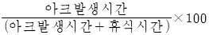
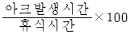
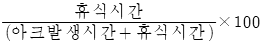
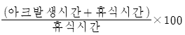
(정답률: 64%)
70. 용접 자세의 기호에서 수평 자세를 뜻하는 기호는?
- O
- V
- F
- H
(정답률: 67%)
71. 다음 중 용접 전 작업 준비사항이 아닌 것은?
- 도면해독
- 맴돌이 검사
- 용접기 선택
- 모재의 재질 확인
(정답률: 71%)
72. 두께가 28mm인 연강판을 0℃ 이하에서 용접할 경우 예열 온도로 가장 적합한 것은?
- 50~75℃
- 150~200℃
- 250~450℃
- 450~650℃
(정답률: 54%)
73. 용접하지 않은 모재도 시험할 수 있는 방법으로 시험편을 굽혀 용접부의 연성이나 균열을 조사하는 시험법은?
- 킨젤 시험(kinzel test)
- 리하이 시험(lehigh test)
- 천이 시험(transition test)
- CTS 시험(Controlled Thermal Severity test)
(정답률: 63%)
74. 잔류응력 측정법 중에는 정성적 방법과 정량적 방법이 있는데 정성적 방법에 속하는 것은?
- X 선법
- 부식법
- 응력이완법
- 광탄성에 의한 빔
(정답률: 29%)
75. 용접 결함의 분류에서 다음 중 구조상의 결함에 속하지 않는 것은?
- 변형
- 기공
- 언더컷
- 오버랩
(정답률: 67%)
76. 다층 용접의 용착법에 해당되지 않는 것은?
- 스킵법
- 빌드업법
- 전진블록법
- 캐스케이드법
(정답률: 61%)
77. 용착금속 깊은 곳의 미세한 결함 검출이 가능하고, 탐상 결과를 즉시 알 수 있는 비파괴 검사방법으로 가장 적당한 것은?
- 자분 탐상 검사
- 침투 탐상 검사
- 초음파 탐상 검사
- 방사선 투과 검사
(정답률: 50%)
78. 열영향부의 균열감수성을 시험하기 위한 방법으로 입열량, 용접재료의 수소량, 응력, 재질의 영향 등을 알아보는 시험법은?
- Implant 시험법
- 가변형속도 균열시험법
- RRC(Rigid Restraint Cracking)시험법
- TRC(Tensile Restraint Cracking)시험법
(정답률: 36%)
79. 맞대기 용접, 필릿 용접 등의 비드 표면과 모재와의 경계부에 발생되는 균열로, 구속응력이 믈 때, 용접부의 가장자리에서 발생하여 성장하는 균열은?
- 토 균열
- 설퍼 균열
- 헤어 균열
- 크레이터 균열
(정답률: 53%)
80. 완전용입 맞대기 용접부에 15kN의 수직력이 작용할 때 이음부에 발생하는 인장 응력은? (단, 판 두께는 6mm, 용접선의 길이는 250mm로 한다.)
- 7N/mm2
- 10N/mm2
- 13N/mm2
- 19N/mm2
(정답률: 45%)
5과목: 용접일반 및 안전관리
81. 다음 중 구리 합금의 용접에 가장 적합한 용접법은?
- 피복 아크 용접
- 탄산가스 아크 용접
- 서브머지드 아크 용접
- 불활성 가스 아크 용접
(정답률: 54%)
82. 다음 중 탄화불꽃을 이용하여 용접해야 하는 재료로만 짝지어진 것은?
- 연강, 청동
- 모넬메탈, 황동
- 니켈크롬강, 구리
- 스테인리스강, 모넬메탈
(정답률: 32%)
83. 피복 아크 용접봉 중 내균열성이 가장 낮은 용접봉은 어느 계통인가?
- 티탄계
- 저수소계
- 일미나이트계
- 고셀룰로오스계
(정답률: 38%)
84. 이음 형상에 따른 저항 용접의 분류 중 맞대기 용접에 속하는 것은?
- 점 용접
- 심 용접
- 플래시 용접
- 프로젝션 용접
(정답률: 34%)
85. 일반적인 용접의 장점이 아닌 것은?
- 보수와 수리가 용이하다.
- 재질의 변형 및 잔류응력이 발생한다.
- 기밀, 수밀, 유밀성이 우수하며 이음 효율이 높다.
- 제품의 성능과 수명이 향상되고 이종재료도 접합할 수 있다.
(정답률: 55%)
86. 아크 용접봉의 피복 배합제 중 아크 안정제가 아닌 것은?
- 석회석
- 니크롬선
- 규산칼륨
- 산화티탄
(정답률: 40%)
87. 열원으로 사용되는 전극이 아크열에 의해 녹지 않는 비소모식 용접은?
- 피복 아크 용접
- 미그(MIG) 용접
- 티크(TIG) 용접
- 서브머지드 아크 용접
(정답률: 67%)
88. 피복 아크 용접에서 정격 2차 전류 200A의 용접기를 사용하여 전류 150A로 용접할 경우 이 용접기의 허용사용률은 약 몇 %인가? (단, 정격사용률은 50%이다.)
- 28
- 67
- 89
- 133
(정답률: 34%)
89. 상온에서 경계면을 국부적으로 소성 변형시켜 압접하는 방법은?
- 마찰 용접(friction welding)
- 초음파 용접(ultrasonic welding)
- 냉간 압접(cold pressure welding)
- 전자빔 용접(electron beam welding)
(정답률: 48%)
90. 일반적인 마찰용접의 특징으로 틀린 것은?
- 작업능률이 높고 변형의 발생이 적다.
- 용접시간이 길고 치수의 정밀도가 낮다.
- 국부 가열리므로 열영향부가 좁고 이음성능이 좋다.
- 취급과 조작이 간단하고 이종 금속의 접합이 가능하다.
(정답률: 62%)
91. 이산화탄소 아크 용접에서 전진법의 내용으로 틀린 것은?
- 용접선이 잘 보이므로 운봉을 정확하게 할 수 있다.
- 스패터가 비교적 많으며 진행방향으로 흩어진다.
- 용착금속이 아크보다 앞서기 쉬워 용입이 얕아진다.
- 비드 높이가 높고 폭이 좁은 비드가 형성된다.
(정답률: 49%)
92. 납땜에서 사용하는 용제가 갖추어야 할 조건으로 틀린 것은?
- 전기 저항 납땜에 사용되는 것은 부도체일 것
- 모재의 표면에 불순물을 제거하고 유동성이 좋을 것
- 모재와의 친화력이 좋고, 금속면의 산화를 방지할 것
- 인체에 해가 없어야 하고, 납땜 후 슬래그의 제거가 용이할 것
(정답률: 71%)
93. 용접부 시험 방법 중 용접성 시험에 해당하지 않는 것은?
- 파면 시험
- 용접 연성 시험
- 노치 취성 시험
- 용접 경화성 시험
(정답률: 34%)
94. 용접 작업 안전에 관한 내용으로 틀린 것은?
- 아크 용접기에는 전격 방지기를 부착하여 사용한다.
- 용접용 홀더는 B형보다는 A형 홀더를 사용하여야 한다.
- 땀이나 물에 의해 젖은 작업복, 장갑, 작업화를 착용하지 않는다.
- 절연 홀더의 절연 부분 파손 시 작업 완료 후 보수하거나 교체한다.
(정답률: 62%)
95. MIG 용접으로 알루미늄을 용접할 경우 어떤 가스를 사용해야 하는가?
- CO2
- Ar+He
- Ar+O2
- Ar+N
(정답률: 57%)
96. 용접 작업 현장에서 주의할 점으로 가장 거리가 먼 것은?
- 화재발생 방지 조치를 충분히 하고 소화기를 준비한다.
- 폭발 위험지역 혹은 특수 인화성 물체 부근에서는 용접작업을 해서는 안된다.
- 탱크 내 유해 가스로 인한 중독 작용이 발생되므로 통풍을 잘하고 용접작업을 한다.
- 산소 결핍 위험 장소에서 산소 농도 측정 시 측정자에 한해서는 보호구 없이 측정 장소에 들어가도 된다.
(정답률: 67%)
97. 아세틸렌 용기에 사용하는 다공 물질이 구비해야 할 조건으로 틀린 것은?
- 강도와 안전성이 있을 것
- 아세톤이 골고루 침윤될 것
- 가스충전과 방출이 어려울 것
- 화학적으로 안정되고 값이 저렴하며 다공성일 것
(정답률: 68%)
98. 용해아세틸렌 가스 취급 시 주의사항으로 틀린 것은?
- 저장 장소는 통풍이 잘 되어야 한다.
- 용기는 아세틸렌 유출을 방지하기 위하여 눕혀서 보관한다.
- 저장실의 전기 스위치, 전등 등은 방폭 구조여야 한다.
- 용기는 진동이나 충격을 가하지 말고 신중히 취급해야 한다.
(정답률: 71%)
99. 직류 아크 용접기 중 정류기형 용접기의 설명으로 틀린 것은?
- 소음이 거의 나지 않는다.
- 보수, 점검이 비교적 간단하다.
- 사용이나 취급이 복잡하고 가격이 비싸다.
- 교류를 정류하므로 완전한 직류를 얻지 못한다.
(정답률: 48%)
100. 아크용접기 특성 중 부하 전류가 증가할 때 단자 전압이 약간 높아지는 특성은?
- 상승 특성
- 수하 특성
- 정전류 특성
- 정전압 특성
(정답률: 43%)